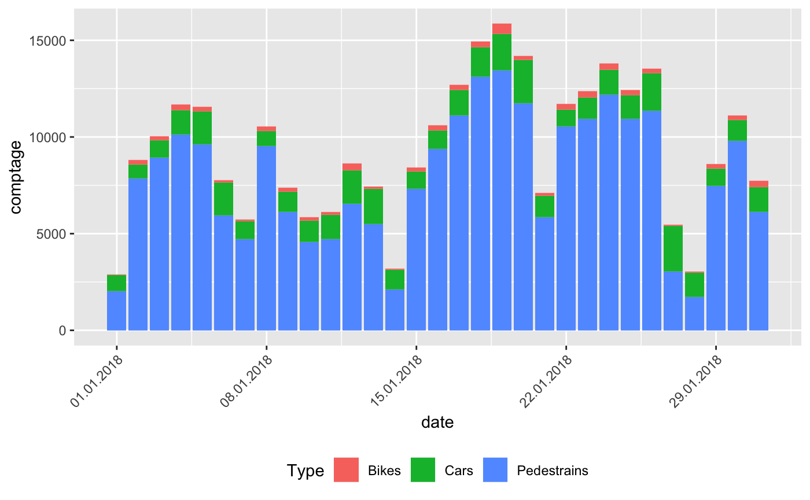

Installation
Until now the package is not in CRAN but you can download it via GitHub with the following command:
if (!require("devtools"))
install.packages("devtools")
devtools::install_github("JohannesFriedrich/EcoCounteR")Introduction
The R-package EcoCounteR is an API wrapper for data collected by https://www.eco-compteur.com. You can request available data from different Eco Counter installations by submitting the Id of the installation to different functions:
| Function name | Description | Example |
|---|---|---|
| get_EcoCounter_info() | request common information about an installation | get_EcoCounter_info(100020207) |
| get_EcoCounter_location() | request location of an installation | get_EcoCounter_location(100020207) |
| get_EcoCounter_data() | request data from an installation | get_EcoCounter_data(101020207) |
The following chapters show some examples how to use the R-package EcoCounteR.
Request basic information from Eco Counter API
First we load some needed packages. The function get_EcoCounter_info() will deliver some information about an installation located at Calgary in the Stephen Avenue. The only argument in get_EcoCounter_info() is the Id of the installation.
library(EcoCounteR)
library(leaflet)
library(htmltools)
EcoCounterId <- 100020207
info <- get_EcoCounter_info(EcoCounterId)info| id | name | nameId |
|---|---|---|
| 101020207 | Stephen Avenue Pedestrian Counts | Z_101020207 |
| 102020207 | Stephen Avenue Cyclist Counts | Z_102020207 |
| 103020207 | Stephen Avenue Car Counts | Z_103020207 |
For later requests we need the coloumn id to get data from this specific installation.
The function get_EcoCounter_info() can also handle multiple EcoCounterIds, e.g.:
EcoCounterIds = c(100020207, 100017181)
info <- get_EcoCounter_info(EcoCounterIds)info| id | name | nameId |
|---|---|---|
| 101020207 | Stephen Avenue Pedestrian Counts | Z_101020207 |
| 102020207 | Stephen Avenue Cyclist Counts | Z_102020207 |
| 103020207 | Stephen Avenue Car Counts | Z_103020207 |
| 101017181 | 7 Street South of 3 Ave SW_SB | Z_IN_101017181 |
| 102017181 | 7 Street South of 3 Ave SW_NB | Z_OUT_102017181 |
Map location of an installation
To get an overview of the installations, we can use the function get_EcoCounter_location(). This function extracts the coordinates from the installations. We can insert the result directly to the R-package leaflet.
get_EcoCounter_location(EcoCounterId) %>%
leaflet() %>%
addProviderTiles(providers$OpenStreetMap) %>%
addTiles() %>%
addMarkers(~long, ~lat, popup = ~htmltools::htmlEscape(name))Request data from Eco Counter API
Now we can use the extracted information to request data. First we load some packages which help to analyse and visualise data.
library(dplyr)
library(ggplot2)
library(scales)From section 2 we know different sub-Ids of an installation. We allocate the different sub-Ids:
Stephan_Avenue_Ped <- 101020207
Stephan_Avenue_Bike <- 102020207
Stephan_Avenue_Car <- 103020207Now it’s time to request some data. For that purpose the function get_EcoCounter_data() can be used. The function takes just one required argument: EcoCounterId. Note: This is not the same EcoCounterId as inserted in get_EcoCounter_data()and get_EcoCounter_location(). The function get_EcoCounter_data() can take more arguments to specify the request.
| Argument | Description | Example |
|---|---|---|
| EcoCounterId | sub-Id to request specific installation | 101020207 |
| from | Start date of the requested data in the form “YYYYMMDD” | “20180101” |
| to | End date of the requested data in the form “YYYYMMDD” | “20180110” |
| step | Frequency of saved data: 2 (15 min), 3 (hourly), 4 (daily), 5 (weekly), 6 (monthly), 7 (yearly) | step = 3 |
Some examples:
## get daily saved data for the day before yesterday and yesterday
get_EcoCounter_data(101020207)
## get daily saved data from 1st January 2018 until yesterday
get_EcoCounter_data(101020207, from = "20180101")
## get hourly saved data from 1st January 2018 to 10th January 2018
get_EcoCounter_data(101020207, from = "20180101", to = "20180110", step = 3)Now let’s put things into practical terms. We request data from 1st to 20th January 2018. With mutate(Type = XXX) we add a new coloum to the data.frame with the specific type of request.
Stephan_Avenue_Ped_daily <- get_EcoCounter_data(Stephan_Avenue_Ped, from = "20180101", to = "20180120") %>%
mutate(Type = "Pedestrains")
Stephan_Avenue_Bike_daily <- get_EcoCounter_data(Stephan_Avenue_Bike, from = "20180101", to = "20180120") %>%
mutate(Type = "Bikes")
Stephan_Avenue_Car_daily <- get_EcoCounter_data(Stephan_Avenue_Car, from = "20180101", to = "20180120") %>%
mutate(Type = "Cars")
Stephen_Avenue_complete <- bind_rows(Stephan_Avenue_Ped_daily, Stephan_Avenue_Bike_daily, Stephan_Avenue_Car_daily)In the last line all single data.frames are combined to a single data.frame. You can further analyse this data to your own needs, e.g. find the days with the most appearance per type:
Stephen_Avenue_complete %>%
group_by(Type) %>%
top_n(1, comptage)
## # A tibble: 3 x 4
## # Groups: Type [3]
## date comptage id Type
## <dttm> <int> <dbl> <chr>
## 1 2018-01-19 00:00:00 13436 101020207 Pedestrains
## 2 2018-01-19 00:00:00 532 102020207 Bikes
## 3 2018-01-20 00:00:00 2223 103020207 CarsVisualise Data
The following examples shows the visualisation of the data.
g <- ggplot(Stephen_Avenue_complete, aes(x = date, y = comptage, fill = Type)) +
geom_bar(stat = "identity") +
scale_x_datetime(labels = date_format("%d.%m.%Y")) +
theme(legend.position = "bottom",
axis.text.x = element_text(angle = 45, hjust = 1))
plot(g)
g2 <- g +
scale_x_datetime(labels = date_format("%d.%m.%Y")) +
facet_wrap(~Type, scales = "free_y") +
geom_smooth(show.legend = FALSE) +
theme(legend.position = "bottom",
axis.text.x = element_text(angle = 45, hjust = 1))
plot(g2)A more comprehensive visualisation
Stephan_Avenue_Ped_daily <- get_EcoCounter_data(Stephan_Avenue_Ped,
from = "20141023",
to = "20180125") %>%
mutate(weekday = wday(date, label = TRUE),
week = week(date),
monthweek = ceiling(day(date) / 7),
year = year(date),
month = month(date, label = TRUE)) %>%
na.omit()ggplot(Stephan_Avenue_Ped_daily, aes(monthweek, weekday, fill = comptage)) +
geom_tile(colour = "white") +
facet_grid(year~month) +
scale_fill_gradient(low = "yellow", high = "red") +
labs(x = "Week of Month",
y = "Day",
title = "Pedestrains at Stephan Avenue",
fill = "Pedestrains")